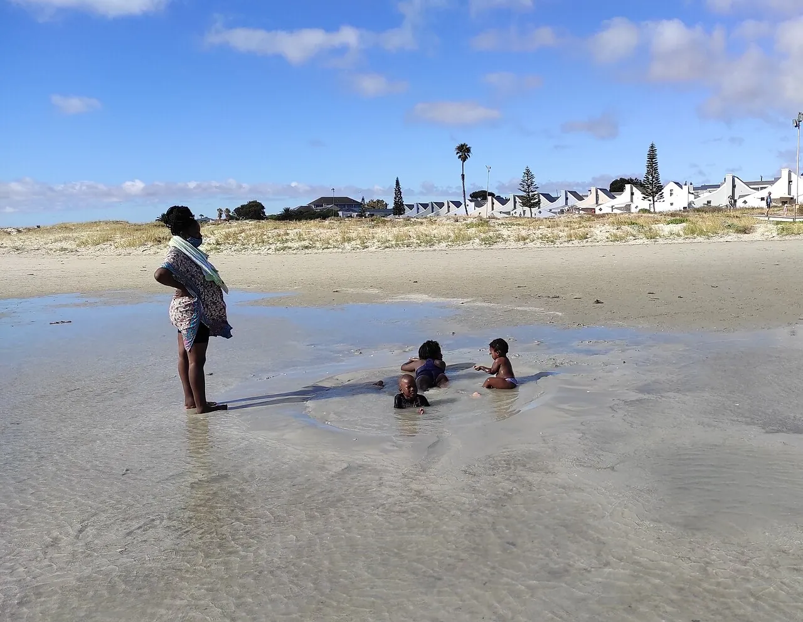

Langebaan
Côte Ouest, Afrique du Sud · kitesurf, windsurf

Lagune turquoise et peu profonde, balayée par le « Cape Doctor » l’été. Un des meilleurs endroits au monde pour apprendre le kite.
- Lieu
- Côte Ouest, Afrique du Sud
- Niveau
- Débutant
- Activités
- kitesurf, windsurf
- Type d'eau
- Mer / océan
- Coordonnées
- -33.09, 18.03 (position approximative du secteur)
Dangers à connaître
- Vent fort l’après-midi.
- Zone du parc national : respecte les limites.
Le conseil d'Ocean Buddy
Le vent se lève l’après-midi : utilise la matinée pour la théorie.
Ouvrir dans Ocean Buddy Télécharger sur l'App Store
Source : Fiche Ocean Buddy · septembre 2026 · à vérifier localement.